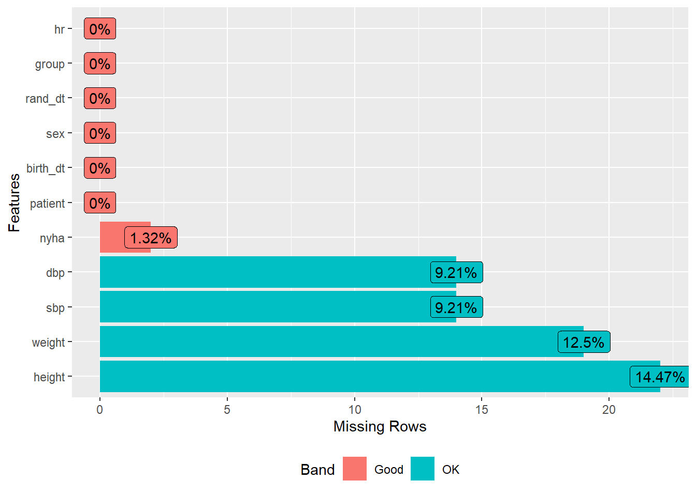

4 Data preparation
Data preparation is the process by which we generate tidy data from raw data. Raw data is the original version of the data as stored during collection, whatever its source, format, structure and state. It is very common that raw data need some tweaks to make them ready for statistical analysis. These tweaks may involve simplifying the data structure, providing appropriate labels for coded variables, detecting and amending errors, recovering missing data, or computing new variables from those available. Tidy data is what we get after these tweaks: a version of the data ready for analysis.
For a set of data to be considered tidy it should have the following structure:
Each variable is a column in a dataframe
Each observation is a row in a dataframe
Each type of observational unit is a dataframe
For instance, suppose we conducted a study on 100 patients and collected data on demographic and anthopometric variables age, sex, and body height and weight. The observational unit is then the patient, and these data can be arranged in a dataframe, having columns for patient, age, sex, height and weight, so that all data for one patient fits in a single row (see table 4.1).
| patient | age | sex | height | weight |
|---|---|---|---|---|
| 1 | 67 | male | 180 | 91 |
| 2 | 42 | male | 168 | 75 |
| 3 | 39 | female | 176 | 69 |
| 4 | … | … | … | … |
| 5 | … | … | … | … |
Now consider data on vital signs such as pulse, systolic and diastolic blood pressure, taken in three visits for the same set of patients. In this case, the observational unit is not the patient, but the visit of a patient, and data should be stored in a dataframe having patient, visit, temperature, pulse, systolic and diastolic blood pressure as columns, so that all data of one visit (of a given patient) fits in one row (see table 4.2).
| patient | visit | pulse | sbp | dbp |
|---|---|---|---|---|
| 1 | 1 | 77 | 120 | 85 |
| 1 | 2 | 85 | 145 | 90 |
| 1 | 3 | 69 | 110 | 65 |
| 2 | 1 | 70 | 120 | 85 |
| 2 | 2 | 80 | 135 | 85 |
| 2 | 3 | … | … | … |
| 3 | 1 | … | … | … |
Last, consider data on adverse events collected during a clinical trial. For each event, some characteristics are recorded, such as the duration(days), severity, actions taken, and outcome. In this case, the observational unit is the adverse event, and the data should be stored in a dataframe with columns patient, event, start date and stop date, severity, actions taken, and outcome. Again in this case, all data for an event fits in a single row (see table 4.3.
| patient | visit | event | duration | actions | outcome |
|---|---|---|---|---|---|
| 1 | 1 | Headache | 1 | none | recovered |
| 2 | 1 | Nausea | 2 | none | recovered |
| 2 | 2 | Vomiting | 1 | none | recovered |
| 2 | 3 | Abdominal cramps | 1 | none | recovered |
| 3 | 1 | Hip fracture | 1 | surgery | recovered |
| 3 | 2 | … | … | … | … |
| 4 | 1 | … | … | … | … |
You will note that the dataframe of figure 4.1 will have as many rows as patients in the study, that is, one-hundred. However, the dataframe of figure 4.2 will have three rows per patient, therefore totaling three-hundred rows (assuming all patients were visited three times). Last, the number of rows in the dataframe of figure 4.3 cannot be known in advance, because a patient can experience no AE at all, one AE or many AE. It should be clear that the structure of these three dataframes is different, and that is why we need three dataframes to accommodate all the data. Trying to put all of it in a single dataframe would result in undesirable things, such as having different columns containing the same type of data (such as AE1, AE2, AE3, …), and structural missings (AE2, AE3, … will be missing for patients experiencing just one AE, but this missings do not reflect lack of data, and are only due to an inappropriate data structure).
For the sake of simplicity, in this chapter we will be concerned with the case where all the available data can be stored in a single dataframe having the simplest possible structure, just like the one in figure 4.1. If this is the case, each row will correspond to a patient, and each column to a variable. This should be enough for many simple observational studies collecting a limited amount of data on a single time point. But even in this simple case, it is important to have a unique case identifier; this is always convenient, and it is critical when the data has to be split in different dataframes, to allow record linkage.
In any case, it is good practice to create dataframes with the following additional characteristics:
Variable names should be short but meaningful, and should contain neither spaces, nor non-standard characters (like slashes, or accents in Spanish words). Variable names may follow different styles, like CAPITALIZED, camelCase, or snake_case, but whatever the style, consistency is a plus. In these book we use the snake_case style.
Categorical variables should have meaningful levels (e.g., “male” or “female” rather than 1 or 2, or “m”, or “f”), and should be factors rather than character vectors.
Quantitative variables should have the units of measurement documented somewhere, though not necessarily in the variable name (in fact this is not recommended, to keep variable names as short as possible, and free of special characters such as brackets, slashes or Greek letters); the study protocol is a reasonable place to document variable units.
A minimal information on the study design, or on how the data were collected, should be available somewhere (e.g., in the study protocol).
It is very important that the data preparation process is traceable and reproducible. To ensure traceability and reproducibility, this process should be done programmatically rather than manually. Manual editions of the data are not reproducible (unless very well documented, which takes a lot of time and is prone to errors), and should be avoided. In this chapter we will see what are the most common tasks in data preparation and how to accomplish them following this principle by writing R scripts.
4.1 Steps in data preparation
It is convenient to approach data preparation in a systematic way. The following is a reasonable order of the most common data preparations tasks:
- Reading raw data
- Reviewing data (looking for problems: missings and errors)
- Modifying data (to fix problems)
- Computing new variables
- Selecting valid cases
- Saving the R script performing steps 1 to 5 above
All the data preparation tasks in steps 2 to 5 above, no matter how complex, can be accomplished using base R. However, some of them are easier using the dplyr package introduced in the previous chapter, and this is the approach we will follow, with few exceptions.
4.2 Reading raw data
Reading external data files was addressed in the previous chapter, where we read the SARA data with the following script:
library(readxl)
library(janitor)
library(dplyr)
d <- read_excel("data/SARA_simplified.xlsx") %>%
clean_names() %>%
rename(patient = patient_no,
birth_dt = birth_date_yyyymm_dd,
rand_dt = date_of_randomization,
group = random_allocation_of_treatment,
weight = body_weight_at_baseline_kg,
height = body_height_at_baseline_cm,
nyha = nyha_classification_at_baseline,
sbp = sbp_at_baseline_mm_hg,
dbp = dbp_at_baseline_mm_hg,
hr = heart_rate_at_baseline_bpm) %>%
mutate(weight = as.numeric(sub(pattern = ",",
replacement = ".",
x = weight,
fixed=TRUE)),
birth_dt = as.Date(birth_dt),
rand_dt = as.Date(rand_dt, "%d/%m/%Y"))
head(d)# A tibble: 6 × 11
patient birth_dt sex rand_dt group weight height nyha sbp dbp
<chr> <date> <dbl> <date> <chr> <dbl> <dbl> <dbl> <dbl> <dbl>
1 1-001 1974-11-15 1 2009-05-11 Catheter … 104 188 1 110 70
2 1-002 1970-02-27 1 2009-05-12 Antiarrhy… 92 182 1 NA NA
3 1-003 1964-02-21 2 2009-06-11 Catheter … 95 177 1 125 70
4 1-004 1962-01-04 2 2009-07-20 Catheter … 80 162 1 139 63
5 1-005 1974-06-02 1 2009-08-17 Antiarrhy… 93 175 NA 122 74
6 1-006 1964-06-22 1 2009-09-21 Catheter … 115 185 1 120 80
# … with 1 more variable: hr <dbl>We will use this d dataframe to illustrate the data preparation tasks covered in this chapter.
4.3 Reviewing data
Data review is a must with any real data set. You cannot assume your data is free of errors. Rather, you should assume that data has errors unless you prove otherwise.
The very first test of a dataset should be to verify that the unique case identifier is really unique, i.e., that all patients have a different value in this variable. The unique() function applied to a vector returns all distinct values with no repetitions (if any). Then, the length() of the resulting vector will be the number of distinct values, and this can be compared to the number of patients (rows) in the dataset:
length(unique(d$patient)) # number of distinct values in d$patient[1] 152length(unique(d$patient)) == nrow(d) # is it equal to the number of rows in d?[1] TRUENow we are sure that there are no two patients with the same case identifier (otherwise the previous comparison would have produced a FALSE).
4.3.1 Missings
Because missing data is a very common problem in real life datasets, we should always start by looking at the number of missings in the data. There are several functions for this purpose, but the simplest one is the base R function is.na(). In previous chapters we used this function on a vector, and summed the result to get the number of missings:
sum(is.na(d$weight)) # missings in weight[1] 19Interestingly, we can use is.na() with dataframes as well. In this case, the result will be a matrix of logical values, the columns (and rows) of which correspond to the columns (and rows) of the dataframe. The colSums() function applied to this matrix will result in the number of missings for each column in the original dataframe. By nesting both functions, a single line of code is enough to get the number of missings in each variable of a dataframe, as shown below (you can do it in two steps if you want to see the matrix produced by is.na(d))
colSums(is.na(d)) # missings in columns of d patient birth_dt sex rand_dt group weight height nyha
0 0 0 0 0 19 22 2
sbp dbp hr
14 14 0
Another option is provided by the plot_missing() function in package DataExplorer, showing the number (and percentage) of missings for each variable in a graphic:
DataExplorer::plot_missing(d)
4.3.2 Data errors
Errors in the data are very common, and we should attempt to detect at least gross errors before proceeding with the analysis. Error detection may be easy or very difficult depending on the type of variable and the type of error. Gross errors in numeric variables and dates can be easily detected by looking at their extreme values (minimum and maximum). These (among other statistics) are provided by summary() for each numeric variable in a dataframe:
summary(d) patient birth_dt sex rand_dt
Length:152 Min. :1939-06-24 Min. : 1.000 Min. :2009-05-07
Class :character 1st Qu.:1949-11-09 1st Qu.: 1.000 1st Qu.:2010-01-17
Mode :character Median :1954-03-30 Median : 1.000 Median :2010-08-25
Mean :1955-11-06 Mean : 1.362 Mean :2010-08-27
3rd Qu.:1962-01-01 3rd Qu.: 1.000 3rd Qu.:2011-03-22
Max. :1983-06-22 Max. :22.000 Max. :2011-11-24
group weight height nyha
Length:152 Min. : 50.00 Min. : 83.0 Min. :1.00
Class :character 1st Qu.: 74.00 1st Qu.:165.0 1st Qu.:1.00
Mode :character Median : 84.50 Median :174.0 Median :1.00
Mean : 85.75 Mean :172.0 Mean :1.26
3rd Qu.: 95.00 3rd Qu.:179.8 3rd Qu.:1.00
Max. :167.00 Max. :193.0 Max. :3.00
NA's :19 NA's :22 NA's :2
sbp dbp hr
Min. :100.0 Min. : 60.00 Min. : 4.00
1st Qu.:119.2 1st Qu.: 70.00 1st Qu.: 57.00
Median :127.0 Median : 80.00 Median : 66.00
Mean :127.4 Mean : 80.42 Mean : 71.14
3rd Qu.:137.0 3rd Qu.: 87.00 3rd Qu.: 82.00
Max. :197.0 Max. :110.00 Max. :150.00
NA's :14 NA's :14
In the previous output we see the maximum value of sex is 22, which is an obvious error. There is also a suspicious maximum of 167 (kg) in weight, a very suspicious minimum of 83 (cm) in height, and an impossible minimum heart rate (hr) of 4 (bpm). However, the previous output is not useful for the group variable, and this is because it’s a character vector. The result would be useful if group was a factor (we would then see each possible value and its frequency), but we have not defined factors yet. Note that summary() also provides information on the number of missings (NA's).
We can inspect the values of a categorical variable stored in a character vector using unique(). This will print all distinct values appearing in the vector, without repetitions:
unique(d$group)[1] "Catheter ablation" "Antiarrhythmic drug treatment"unique(d$sex) # useful for coded categorical variables as well[1] 1 2 22unique(d$nyha)[1] 1 NA 2 3
Sometimes it is worth looking at a graphic combining two variables whose values are related. For instance, we may look at the join distribution of weightand height as done in figure 4.1 (these and other graphics will be presented in detail in the next chapter).
Figure 4.1: Weight and height
By looking at this figure we confirm the weight value 167 kg is an error, since it corresponds to the patient with the minimum height value of 83 cm. This error is likely due to a permutation of heigh and weight values for this patient, which is a common data entry error. Interestingly, there is another patient showing an unusual combination of weight (125 kg) and height (about 160 cm). Though these values have nothing strange when we consider them separately, their combination is unlikely. For this reason, this error was not detected when we looked at these variables separately by inspecting their extreme values, but are easily detected in the plot above.
Once we have detected problematic values in our data, we need to investigate what are the patients affected by these errors.
# Patients with errors
d %>% filter(sex == 22) %>% select(patient, sex)# A tibble: 1 × 2
patient sex
<chr> <dbl>
1 3-001 22d %>% filter(hr < 40) %>% select(patient, hr)# A tibble: 1 × 2
patient hr
<chr> <dbl>
1 6-030 4d %>% filter(weight > 124) %>% select(patient, weight, height)# A tibble: 2 × 3
patient weight height
<chr> <dbl> <dbl>
1 4-001 167 83
2 5-007 125 158# Patients with missings
d %>%
filter (is.na(weight) | is.na(height) | is.na(nyha)| is.na(sbp) | is.na(dbp)) %>%
select(patient, weight: dbp )# A tibble: 30 × 6
patient weight height nyha sbp dbp
<chr> <dbl> <dbl> <dbl> <dbl> <dbl>
1 1-002 92 182 1 NA NA
2 1-005 93 175 NA 122 74
3 1-008 77 178 1 NA NA
4 2-002 93 180 1 NA NA
5 2-003 93 179 1 NA NA
6 2-005 95 NA 2 120 70
7 2-016 65 158 1 NA NA
8 2-017 120 192 1 NA NA
9 3-004 70 175 NA 130 70
10 5-005 NA NA 1 135 75
# … with 20 more rows
Now we should appeal to source documents (such as the clinical records) and try to recover the missing or erroneous data for these patients.
4.4 Modifying data
Suppose we have recovered the following data from clinical records, and the remaining missing data could not be recovered:
| patient | variable | correct_value |
|---|---|---|
| 1-005 | nyha | 1 |
| 3-004 | nyha | 1 |
| 3-001 | sex | 1 |
| 4-001 | weight | 83 |
| 4-001 | height | 167 |
| 6-030 | hr | NA |
To set these data points to their correct values it is very practical to use vector subsetting. When we subset a vector by a condition which is either TRUE or FALSE for each patient, the returned values are those for whom the condition is TRUE. Thus, if we subset a variable using a condition that identifies a single patient, we refer to the value of this variable for this patient. Note that we need to prefix the variable names with the dataframe names, since this is base R (not dplyr):
d$sex[d$patient == "3-001"] # sex for patient 3-001[1] 22
Then, we can use this to set a new value for this data point:
d$sex[d$patient == "3-001"] <- 1 # sex for patient 3-001
d$sex[d$patient == "3-001"] # verify[1] 1
In this manner, we can set all the remaining correct values:
d$nyha[d$patient == "1-005"] <- 1
d$nyha[d$patient == "3-004"] <- 1
d$weight[d$patient == "4-001"] <- 83
d$height[d$patient == "4-001"] <- 167
d$hr[d$patient == "6-030"] <- NA
Finally, we can verify if everything went as expected by printing data for the patients we set new (correct) values. To filter these patients we use %in% operator, so that d rows will be filtered if the patient is one of those specified in the character vector after %in%.
d %>%
filter(patient %in% c("1-005", "3-001", "3-004", "4-001", "6-030")) %>%
select(patient, sex, weight, height, nyha, hr)# A tibble: 5 × 6
patient sex weight height nyha hr
<chr> <dbl> <dbl> <dbl> <dbl> <dbl>
1 1-005 1 93 175 1 70
2 3-001 1 101 187 1 75
3 3-004 1 70 175 1 60
4 4-001 1 83 167 1 51
5 6-030 1 NA NA 1 NAIt seems that everything is fine now!
4.5 Computing new variables
Once all data problems are fixed, the next step is to define factors for all categorical variables, and to compute new variables derived from those in the data. Computing new variables may involve different type of operations, such as using computational formulas, making conditional assignments, categorizing a quantitative variable, recoding categorical variables or manipulating character strings. All these cases are very common, and are illustrated in the following sections.
4.5.1 Defining factors
Dataframe d includes the following categorical variables:
sexis a categorical variable coded as 1 (for males), or 2 (for females).nyhais a categorical variable coded with numbers 1 to 3 to represent NYHA classes I, II and III respectively.groupis a a categorical variable stored as a character vector, with self-explanatory values but a bit too long to be practical (for example, when producing graphics, long strings are usually a problem); we can take the chance of defining a factor to shorten the descriptors as “CA” for Catheter ablation and “ADT” for Antiarrhythmic drug treatment.
The following script defines factors for these three variables and overrides3 d with the result.
d <- d %>%
mutate(sex = factor(sex,
levels = 1:2,
labels = c("male", "female")),
nyha = factor(nyha,
levels = 1:3,
labels = c("I", "II", "III")),
group = factor(group,
levels = c("Catheter ablation", "Antiarrhythmic drug treatment"),
labels = c("CA", "ADT")))
head(d)# A tibble: 6 × 11
patient birth_dt sex rand_dt group weight height nyha sbp dbp
<chr> <date> <fct> <date> <fct> <dbl> <dbl> <fct> <dbl> <dbl>
1 1-001 1974-11-15 male 2009-05-11 CA 104 188 I 110 70
2 1-002 1970-02-27 male 2009-05-12 ADT 92 182 I NA NA
3 1-003 1964-02-21 female 2009-06-11 CA 95 177 I 125 70
4 1-004 1962-01-04 female 2009-07-20 CA 80 162 I 139 63
5 1-005 1974-06-02 male 2009-08-17 ADT 93 175 I 122 74
6 1-006 1964-06-22 male 2009-09-21 CA 115 185 I 120 80
# … with 1 more variable: hr <dbl>4.5.2 Formulas
Many derived variables are obtained using a computational formula involving arithmetic operations, mathematical functions, or both. For instance, the age of patients at randomization can be computed from the birth and randomization dates; the body mas index is computed from the body height and weight. These computations are easily implemented via mutate(), as in the following script, where we finish by selecting relevant variables to verify the result of the computations:
d %>%
mutate(age = floor(as.numeric(rand_dt - birth_dt)/365.25),
bmi = round(weight / (height/100)^2,1)) %>%
select(patient, rand_dt, birth_dt, age, weight, height, bmi)# A tibble: 152 × 7
patient rand_dt birth_dt age weight height bmi
<chr> <date> <date> <dbl> <dbl> <dbl> <dbl>
1 1-001 2009-05-11 1974-11-15 34 104 188 29.4
2 1-002 2009-05-12 1970-02-27 39 92 182 27.8
3 1-003 2009-06-11 1964-02-21 45 95 177 30.3
4 1-004 2009-07-20 1962-01-04 47 80 162 30.5
5 1-005 2009-08-17 1974-06-02 35 93 175 30.4
6 1-006 2009-09-21 1964-06-22 45 115 185 33.6
7 1-007 2009-10-01 1950-06-30 59 89 177 28.4
8 1-008 2009-10-06 1955-03-29 54 77 178 24.3
9 1-009 2009-11-10 1941-07-25 68 62 162 23.6
10 1-010 2009-11-17 1955-04-22 54 86 168 30.5
# … with 142 more rows
We computed the age of patients as the difference of the randomization and birth dates (which results in a number of days) divided by 365.25 to take into account leap years, and then used floor() to round down so as to get completed years. The body weigh (kg/m^2) is defined as weight in kilograms over the square of height in meters. Because height is expressed in centimeters, we divided by 100 to convert it to meters before squaring.
4.5.3 Conditional assignments
Computational formulas are applied exactly the same way for all rows in a dataframe. However, in some instances we want to assign different values to a new variable depending on a condition. For instance, we may want to create an indicator of obesity, which is defined as a body mass index of 30 kg/m^2 or more. Thus, a new variable obesity should take the value “no” for patients having bmi < 30, or “yes” otherwise. This is called a conditional assignment, and can be done with function iflese(), which takes three arguments specified in this order: a condition that can be evaluated as either TRUE or FALSE, the value we want to assign when the condition is TRUE, and the value to be assigned when the condition is FALSE. This is done in the following script after computing bmi:
d %>%
mutate(bmi = round(weight / (height/100)^2,1),
obesity = ifelse(bmi < 30, "no", "yes")) %>%
select(patient, bmi, obesity)# A tibble: 152 × 3
patient bmi obesity
<chr> <dbl> <chr>
1 1-001 29.4 no
2 1-002 27.8 no
3 1-003 30.3 yes
4 1-004 30.5 yes
5 1-005 30.4 yes
6 1-006 33.6 yes
7 1-007 28.4 no
8 1-008 24.3 no
9 1-009 23.6 no
10 1-010 30.5 yes
# … with 142 more rows
For more complex conditional assignments, several iflese()functions may be nested as in the following example:
d %>%
mutate(bmi = round(weight / (height/100)^2,1),
nutritional_status = ifelse(bmi < 18.5,
"underweight",
ifelse(bmi < 25,
"normal weight",
ifelse(bmi <30,
"overweight",
"obesity")))) %>%
select(patient, bmi, nutritional_status)# A tibble: 152 × 3
patient bmi nutritional_status
<chr> <dbl> <chr>
1 1-001 29.4 overweight
2 1-002 27.8 overweight
3 1-003 30.3 obesity
4 1-004 30.5 obesity
5 1-005 30.4 obesity
6 1-006 33.6 obesity
7 1-007 28.4 overweight
8 1-008 24.3 normal weight
9 1-009 23.6 normal weight
10 1-010 30.5 obesity
# … with 142 more rows
Nesting ifelse() functions is very flexible, and there is no limit to the number of nested levels, but it becomes difficult to follow if more than two or three nesting levels are necessary. If the condition depend on a single quantitative variable (as in this case, bmi) it is easier to use a different function allowing to define cutpoints, which is presented in the next section.
4.5.4 Categorization of quantitative variables
A common type of derived variable is what results from the categorization of a numeric variable according to one or more cutpoints. For instance, suppose we want to create age groups by decades, i.e., group patients in bins defined by cutpoints 20, 30, 40, … and so on. This can be easily done using function cut(), that takes two arguments: the numeric variable we want to categorize, and the breaks or cutpoints we want to use, passed as a numeric vector such as c(20, 30, 40, ...). When the cutpoints are equidistant, it is practical to create this numeric vector with seq(), as done in the following script:
d %>%
mutate(age = floor(as.numeric(rand_dt - birth_dt)/365.25),
age_group = cut(age, breaks = seq(20, 70, 10))) %>%
select(patient, age, age_group) -> foo
foo# A tibble: 152 × 3
patient age age_group
<chr> <dbl> <fct>
1 1-001 34 (30,40]
2 1-002 39 (30,40]
3 1-003 45 (40,50]
4 1-004 47 (40,50]
5 1-005 35 (30,40]
6 1-006 45 (40,50]
7 1-007 59 (50,60]
8 1-008 54 (50,60]
9 1-009 68 (60,70]
10 1-010 54 (50,60]
# … with 142 more rows
The result is a factor with the following levels:
levels(foo$age_group)[1] "(20,30]" "(30,40]" "(40,50]" "(50,60]" "(60,70]"By default, intervals are defined from cutpoints as left-open and right-closed, using standard symbols ( and ] respectively. This means that the lower bound is not included in the interval, and the upper bound is included. For instance, a patient 40 years old is included in interval (30, 40] , and excluded from interval (40, 50]). Sometimes we may need left-closed and right-open intervals instead. For instance, the WHO nutritional status defines intervals in this way (note there is an error in the definition of the interval for Obesity class III, which is defined as Above 40; a patient with a BMI of exactly 40 does not fit in any of the classes! Therefore, the last class should be defined as 40 or more). We can produce this classification with cut(), using the argument right = FALSE, as done below. Note the use of count() to get the number of cases in each of the who_nsintervals.
d %>%
mutate(bmi = round(weight / (height/100)^2,1),
who_ns = cut(bmi,
breaks = c(0, 18.5, 25, 30, 35, 40, Inf),
right = FALSE)) %>%
count(who_ns) # A tibble: 6 × 2
who_ns n
<fct> <int>
1 [18.5,25) 25
2 [25,30) 61
3 [30,35) 38
4 [35,40) 5
5 [40,Inf) 1
6 <NA> 22
We could also define custom labels for the resulting intervals as in the following:
d %>%
mutate(bmi = round(weight / (height/100)^2,1),
who_ns = cut(bmi,
breaks = c(0, 18.5, 25, 30, 35, 40, Inf),
labels = c("Underweight", "Normal weight",
"Overweight", "Obesity class I",
"Obesity class II", "Obesity class III"),
right = FALSE)) %>%
count(who_ns)# A tibble: 6 × 2
who_ns n
<fct> <int>
1 Normal weight 25
2 Overweight 61
3 Obesity class I 38
4 Obesity class II 5
5 Obesity class III 1
6 <NA> 224.5.5 Grouping factor levels
Sometimes we want to re-classify observations by pooling some of the levels of a factor. For instance, suppose we want a simpler classification of the nutritional status with a single obesity class obtained by merging the three obesity classes I, II and III. This can be done in with function recode() from the dplyr package as shown below. Note that we only need to specify the levels to recode, plus .default = levels(who_ns) to keep all other levels unchanged.
d %>%
mutate(bmi = round(weight / (height/100)^2,1),
who_ns = cut(bmi,
breaks = c(0, 18.5, 25, 30, 35, 40, Inf),
labels = c("Underweight", "Normal weight",
"Overweight", "Obesity class I",
"Obesity class II", "Obesity class III"),
right = FALSE),
simpler_ns = recode(who_ns,
"Obesity class I" = "Obesity",
"Obesity class II" = "Obesity",
"Obesity class III" = "Obesity",
.default = levels(who_ns))) %>%
count(simpler_ns)# A tibble: 4 × 2
simpler_ns n
<fct> <int>
1 Normal weight 25
2 Overweight 61
3 Obesity 44
4 <NA> 224.5.6 Character strings
We sometimes need to use strings stored in a character variable to derive a new variable. For instance, variable patient is a character vector containing a code for the study center (hospital), a hyphen, and a patient number within the center. Suppose we want to have a variable with the center code. This can be done with substr(). Similarly, we could extract the number of patient in each center.
d %>%
mutate(site = substr(patient, 1, 1),
site_patient = as.numeric(substr(patient, 3, 5))) %>%
select(patient, site, site_patient)# A tibble: 152 × 3
patient site site_patient
<chr> <chr> <dbl>
1 1-001 1 1
2 1-002 1 2
3 1-003 1 3
4 1-004 1 4
5 1-005 1 5
6 1-006 1 6
7 1-007 1 7
8 1-008 1 8
9 1-009 1 9
10 1-010 1 10
# … with 142 more rows
Function substr() always returns a character vector, as is the case of site above. However, we can easily get a numeric vector by wrapping substr() within as.numeric(), as we did for site_patient.
Another common need is exactly the opposite of what we did: to combine two variables to form a new one. As an example, we recompose the patient variable from the two pieces obtained above, using paste():
d %>%
mutate(site = substr(patient, 1, 1),
site_patient = substr(patient, 3, 5),
recompose_patient = paste(site, site_patient, sep = "-")) %>%
select(patient, site, site_patient, recompose_patient) # A tibble: 152 × 4
patient site site_patient recompose_patient
<chr> <chr> <chr> <chr>
1 1-001 1 001 1-001
2 1-002 1 002 1-002
3 1-003 1 003 1-003
4 1-004 1 004 1-004
5 1-005 1 005 1-005
6 1-006 1 006 1-006
7 1-007 1 007 1-007
8 1-008 1 008 1-008
9 1-009 1 009 1-009
10 1-010 1 010 1-010
# … with 142 more rows
Working with strings is always difficult, and we often face problems we did not cover in the previous examples. However, you should be aware that there is much more power in R for working with strings, including detection and substitution of complex patterns, fuzzy string matching, and translations from, or to other languages. In the resources section we provide some links which are relevant for working with strings.
4.6 Selecting valid cases
In virtually all real studies, some of the patients included in the study database are not valid for analysis. Common causes for this are inappropriate enrollment of patients that do not meet all predefined selection criteria, and lack of critical data. Then, we need to get rid of these patients, and keep only those who are valid.
Validity criteria are always functions of the variables in our data, so that we should be able to write an expression to retain valid patients only. For instance suppose we want to declare invalid only those patients having a missing in hr. The result is a dataframe with 151 rows, after removing the only case with missing hr, as shown below:
d %>%
filter(!is.na(hr)) %>%
nrow()[1] 151
Note the use of the not operator ! in front of is.na() in the filter() function. This operator reverses the meaning of what follows. Therefore, if is.na(hr) means hr is missing, !is.na(hr) means hr is NOT missing.
Sometimes you will need to drop all cases having a missing somewhere, so as to keep only cases with complete data. This is easily achieved with function na.omit().
d %>%
na.omit() -> complete
nrow(complete)[1] 124colSums(is.na(complete)) patient birth_dt sex rand_dt group weight height nyha
0 0 0 0 0 0 0 0
sbp dbp hr
0 0 0
In a more realistic case, you may need to investigate different aspects of the data, including compliance with all selection criteria (collected in several variables) and availability of important variables. This may take deriving a new variable that summarizes several validity criteria (such as valid: yes or no), and then use this variable for selection of valid patients.
In the SARA study, only patients that did not comply with the study selection criteria were declared invalid and excluded form all analyses. These patients were: 1-013, 1-038, 1-054, 2-012, 5-002, and 6-021. In the following script we define a vector invalid, and then use the %in% operator to identify rows in d where patient is one of those in invalid:
invalid <- c("1-013", "1-038", "1-054", "2-012", "5-002", "6-021")
d %>%
filter(patient %in% invalid)# A tibble: 6 × 11
patient birth_dt sex rand_dt group weight height nyha sbp dbp
<chr> <date> <fct> <date> <fct> <dbl> <dbl> <fct> <dbl> <dbl>
1 1-013 1955-01-01 male 2010-01-22 ADT 100 176 II 143 100
2 1-038 1953-05-03 male 2011-03-14 CA 106 180 II 142 107
3 1-054 1943-05-16 female 2011-11-07 CA 67 162 I 130 84
4 2-012 1951-12-05 male 2010-06-25 CA 110 180 I 120 70
5 5-002 1946-03-12 male 2009-09-16 CA 85 179 I 133 87
6 6-021 1969-12-22 male 2011-01-31 ADT NA NA I 140 90
# … with 1 more variable: hr <dbl>
To subset dretaining all the remaining patients, we just use the not operator in front of the same expression to get just the opposite result, i.e., patients not in the invalid vector.
d %>%
filter(!(patient %in% invalid))# A tibble: 146 × 11
patient birth_dt sex rand_dt group weight height nyha sbp dbp
<chr> <date> <fct> <date> <fct> <dbl> <dbl> <fct> <dbl> <dbl>
1 1-001 1974-11-15 male 2009-05-11 CA 104 188 I 110 70
2 1-002 1970-02-27 male 2009-05-12 ADT 92 182 I NA NA
3 1-003 1964-02-21 female 2009-06-11 CA 95 177 I 125 70
4 1-004 1962-01-04 female 2009-07-20 CA 80 162 I 139 63
5 1-005 1974-06-02 male 2009-08-17 ADT 93 175 I 122 74
6 1-006 1964-06-22 male 2009-09-21 CA 115 185 I 120 80
7 1-007 1950-06-30 male 2009-10-01 CA 89 177 I 126 102
8 1-008 1955-03-29 male 2009-10-06 CA 77 178 I NA NA
9 1-009 1941-07-25 female 2009-11-10 ADT 62 162 I 140 85
10 1-010 1955-04-22 male 2009-11-17 ADT 86 168 I 122 83
# … with 136 more rows, and 1 more variable: hr <dbl>4.7 Saving the R script
Saving the R script that performs all the needed data preparation tasks is critical if we want this process to be reproducible. This is why we should always save the data preparation script, rather than its result, the tidy dataframe. There is no need to save the tidy data if we can reproduce it at no cost4, and as we will see, there is a very easy way to run the data preparation script once it has been saved to a file.
The following script accumulates what we have done in previous sections, from the reading of raw data to the selection of valid cases:
# reading raw data, cleaning and renaming vars
d <- read_excel("data/SARA_simplified.xlsx") %>%
clean_names() %>%
rename(patient = patient_no,
birth_dt = birth_date_yyyymm_dd,
rand_dt = date_of_randomization,
group = random_allocation_of_treatment,
weight = body_weight_at_baseline_kg,
height = body_height_at_baseline_cm,
nyha = nyha_classification_at_baseline,
sbp = sbp_at_baseline_mm_hg,
dbp = dbp_at_baseline_mm_hg,
hr = heart_rate_at_baseline_bpm) %>%
# fixing problems in weight (commas instead of points!), and dates
mutate(weight = as.numeric(sub(pattern = ",",
replacement = ".",
x = weight,
fixed=TRUE)),
birth_dt = as.Date(birth_dt),
rand_dt = as.Date(rand_dt, "%d/%m/%Y"))
# data changes (after verification in hospital records)
d$sex[d$patient == "3-001"] <- 1
d$nyha[d$patient == "1-005"] <- 1
d$nyha[d$patient == "3-004"] <- 1
d$weight[d$patient == "4-001"] <- 83
d$height[d$patient == "4-001"] <- 167
d$hr[d$patient == "6-030"] <- NA
# invalid patients
invalid <- c("1-013", "1-038", "1-054", "2-012", "5-002", "6-021")
# derived vars
sara <- d %>%
# define factors
mutate(sex = factor(sex,
levels = 1:2,
labels = c("male", "female")),
nyha = factor(nyha,
levels = 1:3,
labels = c("I", "II", "III")),
group = factor(group,
levels = c("Catheter ablation", "Antiarrhythmic drug treatment"),
labels = c("CA", "ADT"))) %>%
# define new variables
mutate(age = floor(as.numeric(rand_dt - birth_dt)/365.25),
age_group = cut(age, breaks = seq(20, 70, 10)),
bmi = round(weight / (height/100)^2,1),
obesity = factor(ifelse(bmi < 30, "no", "yes")),
who_ns = cut(bmi,
breaks = c(0, 18.5, 25, 30, 35, 40, Inf),
right = FALSE),
simpler_ns = recode(who_ns,
"Obesity class I" = "Obesity",
"Obesity class II" = "Obesity",
"Obesity class III" = "Obesity",
.default = levels(who_ns)),
site = substr(patient, 1, 1)) %>%
filter(!(patient %in% invalid)) %>%
# sort by patient
arrange(patient) %>%
# define order of variables in dataframe
select(patient, site, birth_dt:group,
age, age_group,
height, weight, bmi, simpler_ns,
everything(),
-who_ns)
rm(invalid, d)
After filtering valid cases, we used arrange() to ensure that rows will be sorted by patient, and select() to sort the variables as desired. Finally, we removed intermediate objects we no longer need with rm().
In the select() statement, note some useful possibilities:
colons to indicate groups of adjacent variables (as in
birth_dt:group).everything()to indicate all the remaining, non-mentioned variables.negative sign preceding a variable to drop it (
-who_ns).
We now print the first rows of sara to verify the result:
sara# A tibble: 146 × 17
patient site birth_dt sex rand_dt group age age_group height weight
<chr> <chr> <date> <fct> <date> <fct> <dbl> <fct> <dbl> <dbl>
1 1-001 1 1974-11-15 male 2009-05-11 CA 34 (30,40] 188 104
2 1-002 1 1970-02-27 male 2009-05-12 ADT 39 (30,40] 182 92
3 1-003 1 1964-02-21 fema… 2009-06-11 CA 45 (40,50] 177 95
4 1-004 1 1962-01-04 fema… 2009-07-20 CA 47 (40,50] 162 80
5 1-005 1 1974-06-02 male 2009-08-17 ADT 35 (30,40] 175 93
6 1-006 1 1964-06-22 male 2009-09-21 CA 45 (40,50] 185 115
7 1-007 1 1950-06-30 male 2009-10-01 CA 59 (50,60] 177 89
8 1-008 1 1955-03-29 male 2009-10-06 CA 54 (50,60] 178 77
9 1-009 1 1941-07-25 fema… 2009-11-10 ADT 68 (60,70] 162 62
10 1-010 1 1955-04-22 male 2009-11-17 ADT 54 (50,60] 168 86
# … with 136 more rows, and 7 more variables: bmi <dbl>, simpler_ns <fct>,
# nyha <fct>, sbp <dbl>, dbp <dbl>, hr <dbl>, obesity <fct>names(sara) # to see variable order [1] "patient" "site" "birth_dt" "sex" "rand_dt"
[6] "group" "age" "age_group" "height" "weight"
[11] "bmi" "simpler_ns" "nyha" "sbp" "dbp"
[16] "hr" "obesity"
The R script above should be saved to file, with an appropriate name such as “data_preparation.R”, in the same folder where the raw_data is located (e.g., the study folder). Once this is done, you can start a fresh new R session and run this script using function source() with the complete file name as argument (don’t forget the quotes and the .R file extension!). As long as your working directory is the study folder, this will run the script, and the sara dataframe will appear in your workspace (i.e., Environment pane):
source("data_preparation.R")You are now ready for statistical analysis!
Resources
The
forecatspackage provides useful functions to work with factors (and there is a Factors with forcats Cheat Sheet.The
lubridatepackage provides useful functions to work with dates (and there is a Dates and Times Cheat Sheet.The
stringrpackage provides useful functions to work with strings (and there is a Work with Strings Cheat Sheet.For exact matching of strings, see the help of the
grep()function of base R.If you need fuzzy matching (approximate matching) of strings, see the help of the
agrep()function of base for starters; if you want more, see packages fuzzywuzzyR; if you want to get mad, see package stringdist.The googleLanguageR package uses Google Cloud Translation API for language detection and translation of strings to a different language (e.g., Spanish to English). It comes at a price, though quite affordable if you don’t exceed a billion of characters per month (and free for the first 500000 characters).
Exercises
- The following script generates a dataframe with a
hospitalcode, and a within-hospitalpatientnumber.
set.seed(1); d <- data.frame(hospital = c(rep(1:5, each=20)),
patient = rep(1:20, 5) - rpois(n = 100, 0.05),
sex = sample(c("male", "female"), replace = TRUE, size = 100),
age = floor(rnorm(100, mean=45, sd=15)))
head(d) hospital patient sex age
1 1 1 female 35
2 1 2 female 45
3 1 3 female 31
4 1 4 male 47
5 1 5 male 35
6 1 6 male 71- Create a unique case identifier by combining
hospitalandpatientinto a single variablecase_id. - Is
case_idreally unique? If it’s not, investigate what is/are repeatedcase_idvalue(s), and what are their positions (rows) in the dataframe - Fix the problem by appending “a” or “b” to the
case_id, so that it is unique. - Amend the following data errors:
- The true age of the 16 year old patient is 26.
- Patient 1 in hospital 1 is not a female, but a male.
- The top age for this study was 75 years, so that any patient older than 75 is invalid. Eliminate these patients from the tidy dataframe. How many patients are left?
- Read this data of an observational study on pre-hypertension (previous stage to arterial hypertension) conducted in relatives of patients with arterial hypertension (the units of quantitative variables are whole years for age, cm for height and abdominal circumference, kg for weight, and mmHg for SBP and DBP).
- Ensure that all variable have appropriate names in snake_case, and that the case identifier is unique.
- Investigate the number of missings in this dataset. What are the variables containing missings? How many missings are there in each variable?
- Look at the minimum and maximum values of numeric variables. Are there gross errors, like impossible or very suspicious values?
- Define factors for all categorical variables (see the coding here).
- Compute the following derived variables:
age_group: defined as working age (15-64 years) or elderly (65 years or older).bmi: the body mass index (BMI) (kg/^2), rounded to 1 decimal.nutritional status: defined as underweight (BMI < 18.5), normal weight (18.5–24.9), overweight (25.0–29.9), or obesity (30 or above).
- Keep only the patients having complete data (no missings).
- Reorder variables so that derived variables come immediately after those they depend on.
- Ensure rows are ordered by subject number.
- Save your R script to a file with the name “pre_hta_data_preparation.R”, start a fresh R session, and verify your working directory is the folder where you saved the file (check this by running
getwd()). Without opening the script in the RStudio editor, run it withsource("pre_hta_data_preparation.R"). - Answer these questions:
- How many patients are left?
- Are there any missings?
- What is the mean of
bmi? - How many patients are there in each nutritional status category?
Overriding the dataframe you start with (
din this case) is not a good idea unless you have tested the code and are pretty sure it works well. For testing, use a different name, so that you do not loosedif something goes wrong.↩︎In studies with lots of data and/or very complex data preparation, the R script may be very long and take too much time to be executed. In these cases, it is reasonable to save not only the data preparation script, but also the resulting tidy dataframe.↩︎